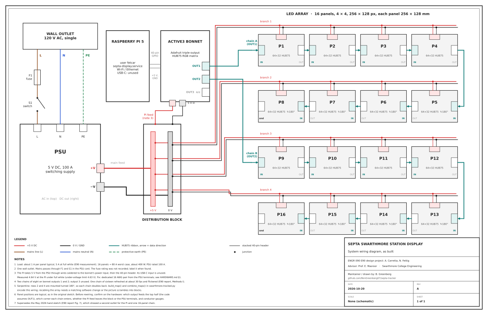
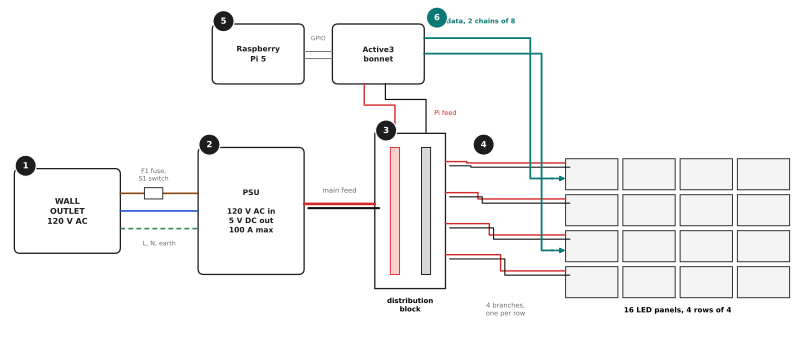
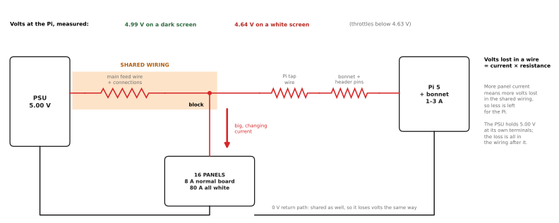
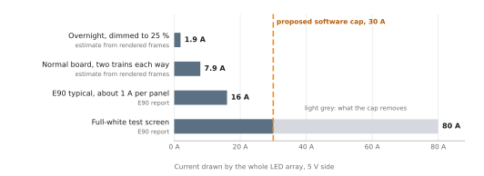
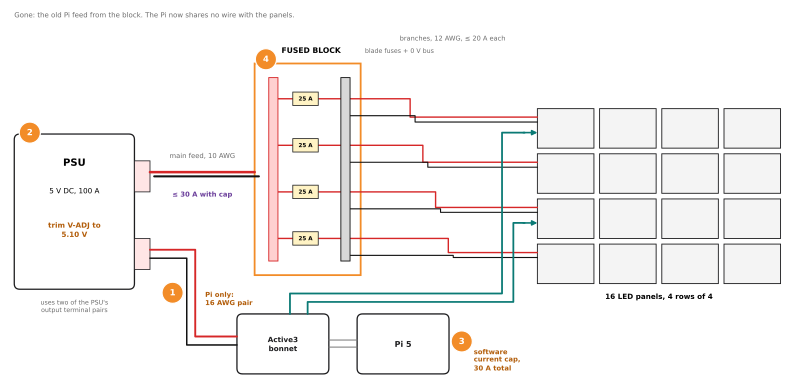
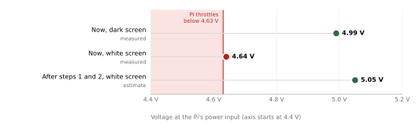

Sheet 1 shows every wire. This is the same circuit with the detail taken out. Power reaches every panel side by side (in parallel). Data goes through the panels one after another (in series). The two only share the 0 V ground.

Numbers match the walk-through on the right. Red is +5 V, black is 0 V, teal is data. Mains: brown is live, blue is neutral, green dashes are earth.
One ordinary outlet. Live passes through fuse F1 and switch S1 on the cord. Earth is bonded to the PSU's metal case, so a loose live wire trips the breaker instead of making the case live. Draws about 0.9 A, 4.1 A at most.
Turns mains into low-voltage DC. It holds its output at 5 V and supplies whatever current is asked for, up to 100 A. Its V-ADJ screw trims that 5 V up or down a little. Everything after this point is low voltage; everything before it is mains.
Two metal bars, +5 V and 0 V. One thick main feed comes in from the PSU and five pairs go out: four branches to the panels and one to the Pi. It is a splitter, nothing more. It has no fuses.
Each branch feeds one row of four panels in parallel. A panel takes about 1 A on an ordinary picture and up to 5 A when every LED is white, so a branch carries up to 20 A and the whole array up to 80 A.
The Pi runs the software and fetches train times. The bonnet sits on its 40-pin header and turns the Pi's 3.3 V signals into three 5 V HUB75 outputs. The Pi is powered backwards: its 5 V comes in through the bonnet and the header pins, not its USB-C socket.
Outputs 1 and 2 each feed a chain of eight panels. Each panel passes the picture on from its OUT to the next panel's IN. Rows 2 and 4 are mounted upside down, so each chain snakes back. The software expects exactly this order.
The supply is big enough. The problem is where volts get lost on the way, and that nothing limits how much current the panels can ask for.

The zigzags are the resistance of wires, screws and pins, drawn as parts so you can see where volts go. The shaded run carries both loads at once.

Estimates: real board frames from the software, scaled by the E90 figure of 5 A per panel at full white. LED current only, so the true numbers are a little higher.
An LED only takes current while it is lit. A black screen takes almost nothing, and a white one lights every red, green and blue LED at once. The real board is mostly black with coloured text: about 8 A by day and 2 A dimmed at night. A full-white test screen takes 80 A, ten times as much.
That swing on its own is fine. The PSU is built for it and holds 5 V at its terminals.
The Pi's feed starts at the distribution block, so the panels' current and the Pi's current both flow through the main feed and its screw connections. When the panels draw more, more volts are lost in that shared run, and the Pi gets what is left after that, its own tap wire, the bonnet and the header pins.
Measured on 2026-09-21: 4.99 V at the Pi on a dark screen, 4.64 V on white. The Pi throttles below 4.63 V. It slows down there, and repeated brown-outs are how SD cards get corrupted. The flicker on white matched this exactly.
The software will happily show a white frame, so every wire has to be sized for 80 A even though the board never needs a fifth of that. And the block has no fuses. A 100 A supply does not trip on a pinched branch wire; it feeds it until the wire gets hot.
Orange marks what changes. Do steps 1 and 2 first: together they fix the Pi. Steps 3 and 4 make the worst case predictable and safe.


The estimate assumes 5.10 V at the PSU, a 0.6 m 16 AWG pair (about 16 mΩ there and back) and the Pi's 3 A peak: 5.10 − 0.05 ≈ 5.05 V, whatever is on the screen.
| Do this | Why | Cost | |
|---|---|---|---|
| 1 | Give the Pi its own wires. Run a red/black 16 AWG pair from a spare +V/−V screw pair on the PSU to the bonnet's 5 V input. Remove the old feed from the block. | The Pi stops sharing wire with the panels, so panel current can no longer pull its voltage down. | ≈ $8 |
| 2 | Trim the PSU to 5.10 V. Turn V-ADJ slowly while reading the PSU's output screws with a meter, board running. | A little headroom for what the wires still lose. The official Pi supply is 5.1 V too. Do not go above 5.25 V. | free |
| 3 | Cap the current in software. Before each frame is shown, add up its pixels; if the total would draw more than 30 A, dim that frame to fit. | The normal board (≈ 8 A) never changes. A white test screen or a bug can no longer pull 80 A, so the main feed only ever carries up to 30 A. | free |
| 4 | Swap in a fused block. A 6-circuit blade-fuse block with a 0 V bus (for example Blue Sea 5025) and a 25 A fuse on each branch. | A short or a pinched wire blows a $1 fuse instead of cooking the wire. The 0 V bus replaces the old ground bar. | ≈ $50 |
Check the PSU first: most 100 A units have three +V and three −V screws, so one pair for the block, one for the Pi and one spare.
vcgencmd get_throttled on the Pi prints throttled=0x0
after an hour of running.